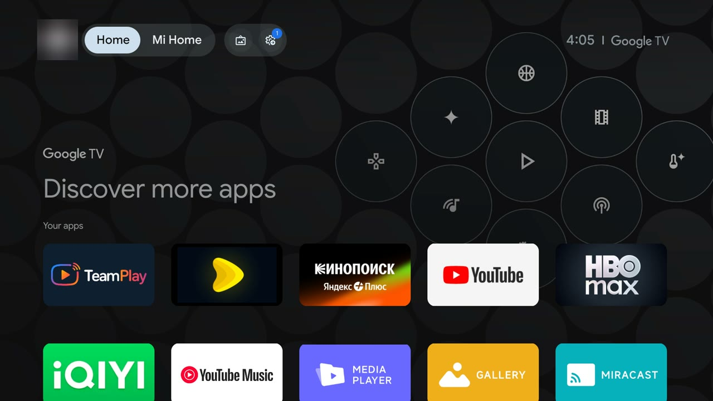
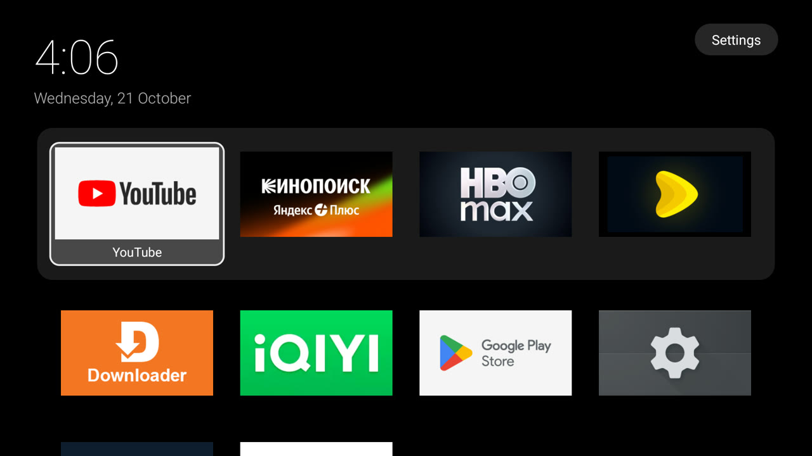
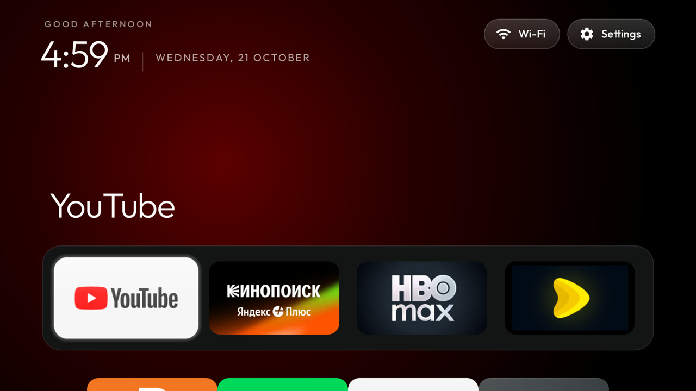
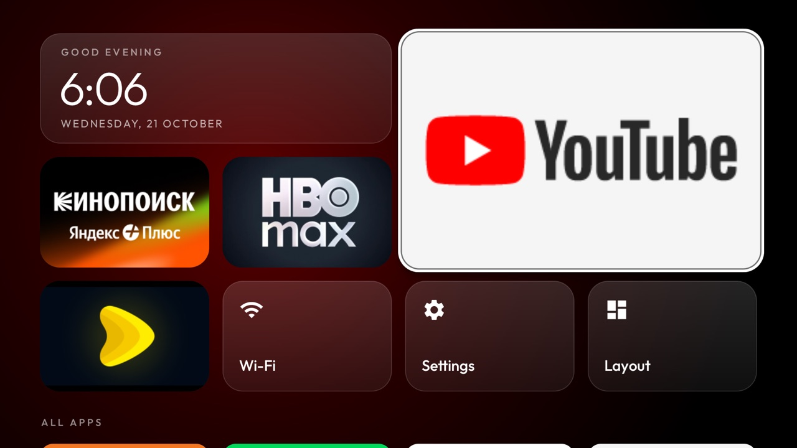
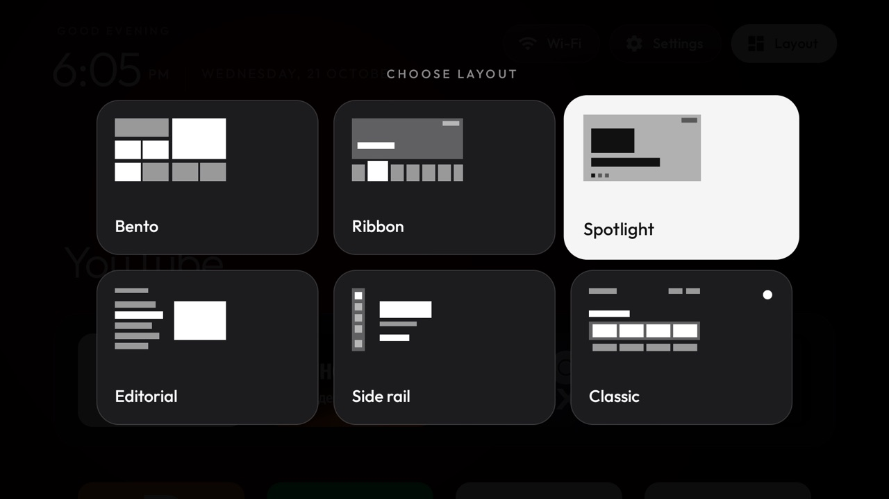

1 of 4
Google TV, as it ships
The stock home opens on Google TV's own tabs and a "Discover more apps" banner. Behind it run dozens of services you never asked for: telemetry, promos and apps that install themselves.
BoxClean removes the ads, telemetry and auto-installs from a Xiaomi Mi Box S 2nd gen over network ADB. Then it replaces the Google TV home screen with a small offline launcher that has six layouts.
Free and open source under Apache-2.0. Every change can be undone.
Four real screenshots from the same box, in the order they happened. Scroll to wipe each one away.
The stock home opens on Google TV's own tabs and a "Discover more apps" banner. Behind it run dozens of services you never asked for: telemetry, promos and apps that install themselves.
With the clutter switched off, the box needs a home screen that doesn't phone home. The first BoxClean Home was a plain grid: a clock, your apps and Settings. It has no network permission at all.
Next came the Outfit type, a colour glow sampled from the focused app, and a glass highlight that glides between tiles. This look, adapted from CleanYourTV, lives on as the Classic layout.
Today the launcher builds its home from the layout you choose: Bento, Ribbon, Spotlight, Editorial, Side rail or Classic. Press Layout, pick one, and it stays picked after a reboot.




Google TV home
Every layout is plain Android views, so focus moves instantly on the box's small GPU. Choose one below the way you would on the TV.

On the TV, the Layout button on every home screen opens this picker. OK switches, Back closes it.
One cleans the box from your computer. The other is the home screen it leaves behind.
tools/boxclean.py
pm disable-user.restore turns everything back on and returns Home to its old owner.disable and restore show what they would do before doing it.launcher/
BoxClean exists because of CleanYourTV, Gathin's open-source project that showed a Google TV box can lose its ads without root.
Forking it would have been the quick route. Instead, BoxClean was rebuilt from an empty folder with Claude Code, one decision at a time, so every package it turns off and every view it draws is understood. The first version, from the debloat script to the sixth layout, landed in eight commits on 21 October 2026.
Where BoxClean does borrow, it says so. Those parts keep their MIT license and are credited in NOTICE.
You need a Mac or Linux machine on the same network as the box, uv and Android's adb. Replace <ip> with your box's address.
Settings → System → About, press OK on Build seven times. Then Developer options → USB debugging on. Note the IP address under Settings → Network and accept "Allow debugging?" on the TV.
Neither command changes anything.
TV_HOST=<ip> uv run tools/boxclean.py probe TV_HOST=<ip> uv run tools/boxclean.py backup
Dry-run each list, then apply it. Repeat with lists/2-personal.txt after editing it to suit you.
TV_HOST=<ip> uv run tools/boxclean.py disable lists/1-telemetry-ads.txt --dry-run TV_HOST=<ip> uv run tools/boxclean.py disable lists/1-telemetry-ads.txt
Build and install it, then switch off the stock launcher. Or install the APK from Releases instead of building.
TV_HOST=<ip> launcher/build-install.sh TV_HOST=<ip> uv run tools/boxclean.py disable lists/3-launcher.txt
Press Layout on the home screen and choose one. For the clock screensaver:
adb shell settings put secure screensaver_components com.boxclean.home/.ClockDream
Turn USB debugging off, revoke the authorisations and reboot. Then check that the port is shut:
TV_HOST=<ip> uv run tools/boxclean.py closed # must say "refused"Changed your mind? restore lists/<list>.txt puts it all back. The README has every detail.